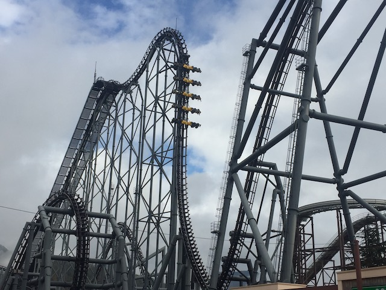
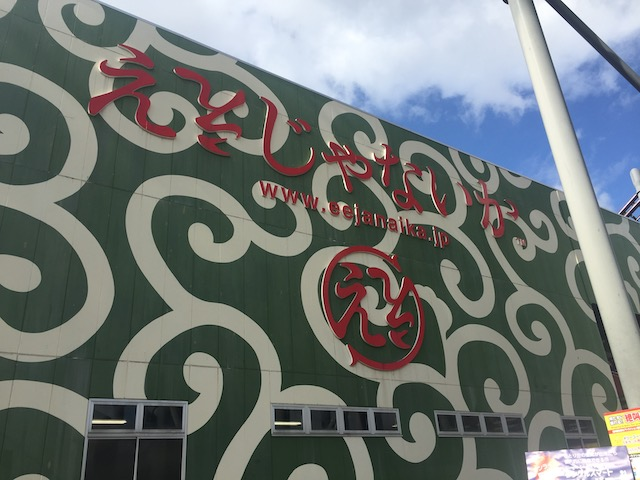

| |
Eejanaika Review

We're here at Fuji-Q Highlands. Today's ride we'll be reviewing for you is Eejanaika. Now this is special treat for most of you guys as this is one of only three S&S 4-D coasters in the world. Now I know for me, it didn't seem that special because one of them, X2, is located right at my home park and I ride it all the time. But yeah. Between X2, this, and Dinoconda in China, these are the only S&S 4D coasters in the world. You all know that I LOVE X2, and Eejanaika! *laugh* oh boy. Eejanaika is X2 on f*cking steroids! It is just PURE F*CKING CRAZY!!! How so? They look damn near identical. Sure, this is a little bigger, and it does have the full-full (AKA, a Heartline Spin). But is that enough? Oh, just wait and see. We get in the seats, do all the restraints, and...WE'RE OFF!!! The seats rotate in position, and away we go! Now normally, the turn out of the station to the lifthill is nothing. But it's actually kind of cool on Eejanaika. No! Not because we're going in the opposite direction from X2, but because on Eejanaika, the seats tilt us 90 degrees! Yeah! We're facing the sky for this part of the ride! Somehow, that makes it actually kind of cool. We flip back to normal as we start climbing the lifthill. At this point, it feels like X2. Except this time, our view is of the mountains and the freeway that passes right by Fuji-Q. Finally, we crest the lifthill, and...yeah. This is pretty much X2's first drop. Only slightly bigger, but you can't really tell honestly. Which....I don't mind AT ALL!!! X2 has one of the best first drops ever, which means in turn, so does Eejanaika. Dip down, rise up, and drop. Go into freefalling mode. In the skydiving position down towards the ground. LOVE THAT FIRST DROP!!! We then rise up into the first raven turn. It seems like an X2 clone, until we get to the top of that raven turn. Where BAM!!! We flip upsidedown. Love that bonus flip at the top of the raven turn. And before that's over, we drop right back to the ground. SWEET!!! We then head into the Zero G Roll. Except...you don't go upsidedown. Yeah. It does that weird Tranan sh*t where the track inverts, but you stay rightside up. It's a freaky feeling, and it gives you some very intersting laterals. Especially when you do it on a Zero G Roll. Getting some ideas for an S&S Free Fly (someone please build another one of those rides). We then go into what is this rides version of the turnaround. Now on X2, this is the breather part of the ride. But on Eejanaika, there ARE no breather moments on the ride. First off, the turn on this is far more of an overbanked turn than on X2, which is more of a banked turn in the air. Second, the seats rotate a little bit in here in order to briefly make you sideways. Freaky feeling, and adding excitement to what would normally be the breather part of the ride. We then come to the Half-Half. And yeah. It's very much like the one on X2. These two moments are damn near identical. It's weird, but still cool. We then head into the second raven turn of death, which....yeah. It kind of is like on X2. OK, the ride is essentially X2 at this point. Yeah. This second raven turn is brutal, though...not quite as rough as on X2. We then So yeah. Flip back to normal and glide into the brake run. Well...not quite, Eejanaika has one last trick up its sleeve, and because I avoid POVs of rides I don't plan on riding (unless the coaster gets demolished), this caught me by surprise. When Eejanaika glidews into the brake run, it SHOVES you down, facing the ground as you slow down, before rotating you back to normal. That ground shove just catches you off guard and is....WHOA!!! Love that nice little touch at the end. And that's Eejanaika. You see why I call this X2 on steroids!? It does everything I LOVE on X2, with so many more touches, such as that ground shove, the raven turn flip, and even facing the sky on the turn to the lift hill. It's just an INSANE ride and you HAVE to get on it if you're at Fuji-Q. My favorite coaster in Japan (so far) and one of the best coastes ever!
10/10
Location: Fuji-Q Highlands
Opened: 2006
Built by: S&S Power
Last Ridden: November 5, 2018
My raw footage video of Eejanaika
Eejanaika Photos



Home
|